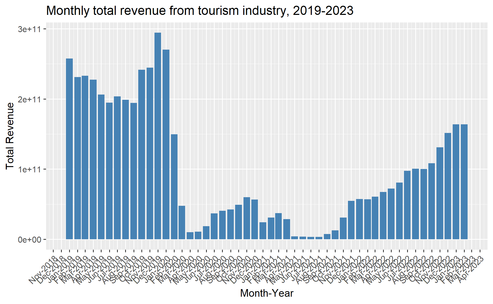
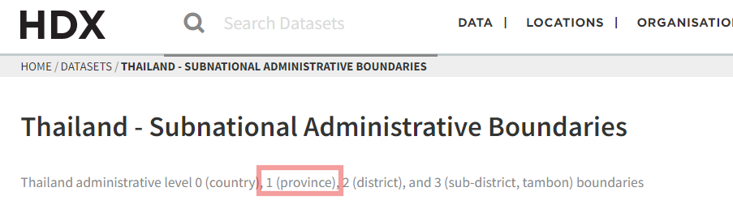

pacman::p_load(sf, spdep, sfdep, tmap, tidyverse, ClustGeo,
cluster, factoextra, NbClust, heatmaply,
corrplot, psych, GGally, ggpubr, plotly)Take-home Exercise 2: Geospatial Analytics in Thailand Tourism Sector (Pre, During, Post COVID-19)
2 Overview: Discovering the impacts of COVID-19 on Thailand’s tourism economy using spatial and spatio-temporal statistics
Tourism plays a significant role in Thailand’s economy, contributing about 20% to the country’s GDP. In 2019, Thailand generated 90 billion USD from both domestic and international tourism, but the COVID-19 pandemic led to a drastic drop in revenues to 24 billion USD by 2020.
The figure below illustrates the total revenue from the tourism sector from January 2019 to February 2023, highlighting a gradual recovery in tourism revenue starting in September 2021.

2.1 The Task
As an eager geospatial analytics novice, the aim is to explore the following:
- Whether the key indicators of Thailand’s tourism economy are independent of spatial and spatio-temporal factors.
- If dependencies exist, aim to identify the clusters, outliers, and emerging hot or cold spots within the tourism economy.
The specific tasks for this exercise are:
- Using appropriate sf and tidyverse functions, prepare the following geospatial data layers:
- A study area layer in sf polygon format, covering provinces in Thailand, including Bangkok.
- A tourism economy indicators layer for the study area in sf polygon format.
- A derived tourism economy indicator layer in the spatio-temporal s3 class of sfdep, with a monthly and yearly time series.
- Using the extracted data, conduct the following analyses using sfdep methods:
- Global spatial autocorrelation analysis.
- Local spatial autocorrelation analysis.
- Emerging hotspot analysis.
- Describe the spatial patterns identified through these analyses.
2.2 Getting Started
2.2.1 Installing and Loading the R Packages
The following R packages will be launched into the R environment using the following code chunk below.
The R packages needed for this exercise are as follows:
- Spatial data handling
- sf, rgdal, spdep and sfdep
- Attribute data handling
- tidyverse, especially readr, ggplot2 and dplyr
- Choropleth mapping
- tmap
- Multivariate data visualisation and analysis
- coorplot, ggpubr, and heatmaply
- Cluster analysis
- cluster
- ClustGeo
2.3 The Data
For this exercise, two data sets will be utilised. They are:
- Thailand Domestic Tourism Statistics at Kaggle.
- Thailand - Subnational Administrative Boundaries at HDX. the province boundary data set is used for this exercise.
2.3.1 Loading the Attribute Data
There are 2 versions of this dataset thailand_domestic_tourism_2019_2023.csv & thailand_domestic_tourism_2019_2023_ver2.csv. Version 2 will be used for this exercise. The csv file will be imported using read_csv function of readr package.
thdt <- read_csv("data/aspatial/thailand_domestic_tourism_2019_2023_ver2.csv")glimpse() is used to have a brief overview of the data.
glimpse(thdt)Rows: 30,800
Columns: 7
$ date <chr> "1 01 2019", "1 01 2019", "1 01 2019", "1 01 2019", "1 0…
$ province_thai <chr> "กรุงเทพมหานคร", "ลพบุรี", "พระนครศรีอยุธยา", "สระบุรี", "ชัยนาท…
$ province_eng <chr> "Bangkok", "Lopburi", "Phra Nakhon Si Ayutthaya", "Sarab…
$ region_thai <chr> "ภาคกลาง", "ภาคกลาง", "ภาคกลาง", "ภาคกลาง", "ภาคกลาง", "…
$ region_eng <chr> "central", "central", "central", "central", "central", "…
$ variable <chr> "ratio_tourist_stay", "ratio_tourist_stay", "ratio_touri…
$ value <dbl> 93.37, 61.32, 73.37, 67.33, 79.31, 71.70, 64.65, 71.21, …2.3.1.1 Data Dictionary
This dataset contains statistics on domestic tourism in Thailand from Jan 2019 to Feb 2023, broken down by province. The dataset includes information on the number of tourists, the occupancy rate, and the profits generated by tourism in each province, as well as the nationality of the tourists (Thai vs. foreign).
Sourced from raw data provided by the Official Ministry of Tourism and Sports Statistics, which was manually entered into Excel files.
The author has pre-processed the data using Python with the intention of making it more accessible in the appropriate format which has the potential to provide valuable insights into the domestic tourism industry in Thailand, including trends and patterns across different provinces over time. Researchers, analysts, and policy-makers with an interest in the domestic tourism sector in Thailand may find this dataset useful for their work. Source: (Thailand Domestic Tourism Statistics by Thaweewat R)
The description for some of the variables have been re-phrased for a more accurate alignment of understanding in line with the variables.
| Column | Description |
|---|---|
| date | The month and year in which the statistics were recorded. The dataset covers the years 2019-2023. |
| province_thai | The name of the province in Thailand, in the Thai language. |
| province_eng | The name of the province in Thailand, in English. |
| region_thai | The name of the region in Thailand to which the province belongs, in the Thai language. |
| region_eng | The name of the region in Thailand to which the province belongs, in English. |
| variable(s) | The 8 types of data being recorded, such as the number of tourists or the occupancy rate. |
no_tourist_all The total number of tourists (foreign & domestic) who visited the province |
|
no_tourist_foreign The number of foreign tourists who visited the province |
|
no_tourist_occupied The total number of occupied hotel rooms in the province |
|
no_tourist_thai The number of Thai tourists (domestic) who visited the province |
|
|
|
revenue_all The revenue generated by the tourism industry in the province, in Thai Baht |
|
revenue_foreign The revenue generated by foreign tourists in the province, in Thai Baht |
|
revenue_thai The revenue generated by Thai tourists in the province, in Thai Baht |
|
| value | The value of the data being recorded. |
2.3.2 Data Preparation
The two following code chunks are utilised to check for any duplicated or missing values in each column
any(duplicated(thdt))[1] FALSEsum(is.na(thdt))[1] 0The results above tell us that there are no duplicated values and no values that are missing.
The relevant columns that will be used for analysis will then be selected.
thai_tourism <- thdt %>%
group_by(date, province_eng, variable) %>%
summarise(total_value = sum(value, na.rm = TRUE))
head(thai_tourism)# A tibble: 6 × 4
# Groups: date, province_eng [1]
date province_eng variable total_value
<chr> <chr> <chr> <dbl>
1 1 01 2019 Amnat Charoen no_tourist_all 21790
2 1 01 2019 Amnat Charoen no_tourist_foreign 818
3 1 01 2019 Amnat Charoen no_tourist_stay 8551
4 1 01 2019 Amnat Charoen no_tourist_thai 20972
5 1 01 2019 Amnat Charoen ratio_tourist_stay 65.2
6 1 01 2019 Amnat Charoen revenue_all 34510000 2.3.2.1 Loading the Geospatial Data (Thailand - Subnational Administrative Boundaries)
The code chunk below is used to import the Subnational Administrative Boundaries of Thailand. Level 1 will be used as it represents the province boundary as seen in the HDX website.

thadmin <- st_read(dsn = "data/geospatial",
layer = "tha_admbnda_adm1_rtsd_20220121") %>%
select(1:3, 5, 17)Reading layer `tha_admbnda_adm1_rtsd_20220121' from data source
`C:\zjho008\ISSS626-GAA\Take-home_Ex\Take-home_Ex02\data\geospatial'
using driver `ESRI Shapefile'
Simple feature collection with 77 features and 16 fields
Geometry type: MULTIPOLYGON
Dimension: XY
Bounding box: xmin: 97.34336 ymin: 5.613038 xmax: 105.637 ymax: 20.46507
Geodetic CRS: WGS 84thadminSimple feature collection with 77 features and 4 fields
Geometry type: MULTIPOLYGON
Dimension: XY
Bounding box: xmin: 97.34336 ymin: 5.613038 xmax: 105.637 ymax: 20.46507
Geodetic CRS: WGS 84
First 10 features:
Shape_Leng Shape_Area ADM1_EN ADM1_PCODE
1 2.417227 0.13133873 Bangkok TH10
2 1.695100 0.07926199 Samut Prakan TH11
3 1.251111 0.05323766 Nonthaburi TH12
4 1.884945 0.12698345 Pathum Thani TH13
5 3.041716 0.21393797 Phra Nakhon Si Ayutthaya TH14
6 1.739908 0.07920961 Ang Thong TH15
7 5.693342 0.54578838 Lop Buri TH16
8 1.778326 0.06872655 Sing Buri TH17
9 2.896316 0.20907828 Chai Nat TH18
10 4.766446 0.29208711 Saraburi TH19
geometry
1 MULTIPOLYGON (((100.6139 13...
2 MULTIPOLYGON (((100.7306 13...
3 MULTIPOLYGON (((100.3415 14...
4 MULTIPOLYGON (((100.8916 14...
5 MULTIPOLYGON (((100.5131 14...
6 MULTIPOLYGON (((100.3332 14...
7 MULTIPOLYGON (((101.3453 15...
8 MULTIPOLYGON (((100.3691 15...
9 MULTIPOLYGON (((100.1199 15...
10 MULTIPOLYGON (((101.3994 15...glimpse(thadmin)Rows: 77
Columns: 5
$ Shape_Leng <dbl> 2.417227, 1.695100, 1.251111, 1.884945, 3.041716, 1.739908,…
$ Shape_Area <dbl> 0.13133873, 0.07926199, 0.05323766, 0.12698345, 0.21393797,…
$ ADM1_EN <chr> "Bangkok", "Samut Prakan", "Nonthaburi", "Pathum Thani", "P…
$ ADM1_PCODE <chr> "TH10", "TH11", "TH12", "TH13", "TH14", "TH15", "TH16", "TH…
$ geometry <MULTIPOLYGON [°]> MULTIPOLYGON (((100.6139 13..., MULTIPOLYGON (…2.4 Exploratory Data Analysis (EDA)
2.5 Personal Notes (to be removed)
Data covers several years and have several attributes
geospatial data - is in high res - has small multiple islands - have to note the small islands - probably remove or have it in one of the territory
pre , during , post covid (three temporal terms) changes in revenue and other measures to be investigated.
Uneven spatial distributions
If key indicators (multiple indicators to look out for) are independent from - space, space & time (cross sectional - pre, etc during post covid)
If it is indeed spatial and spatial temporal dependent
cluster - outliers - hotspots - local moran I to detect cluster and outlier G* statistics to discover hot and cold spots.
Emerging hotspots - have to be continuous - for 3 years, 4 years, months etc. Note for this data set what is the constraint to see the data continuously.
sfdep - advantages -
spacetime cube - created by sfdep
points below the teen birth rate is about LISA
have to recode the date
Refer to hands on ex - hunan case - maybe the GPD -